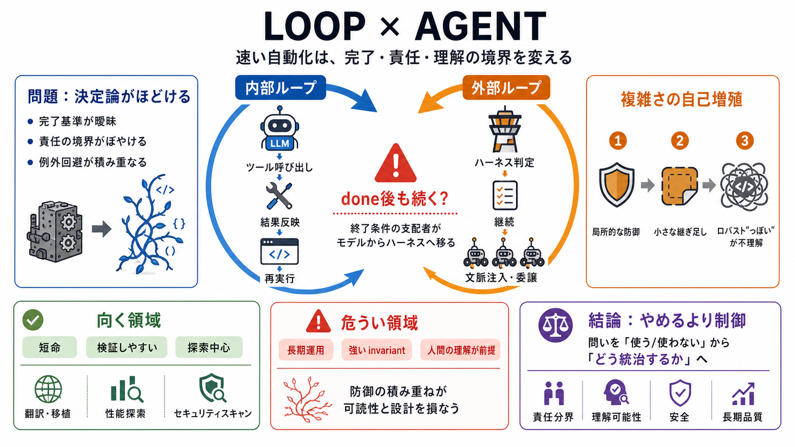

2026 AI Coding Trends: Ralph Wiggum Pattern, Agent Skills, Orchestration | Addy Osmani posted on the topic | LinkedIn
[Like](https://www.linkedin.com/signup/cold-join?session_redirect=https%3A%2F%2Fwww%2Elinkedin%2Ecom%2Fposts%2Faddyosman…

ツール呼び出し→結果反映→再実行（モデル内の反復）
ハーネスが判定→継続・文脈注入・委譲（done後も継続）
done（自己申告）
判定・継続・再文脈化
監督・説明責任が難化
invariant（不変条件）で不可能化する
防御を足して「動くようにする」
移植（porting）・リファクタ
チューニング・比較実験
スキャン・脆弱性調査
一時的成果／機械的検証／探索中心
長期運用／強いinvariantが重要／理解が前提
局所的な防御
小さな継ぎ足し
ロバスト“っぽい”が不理解
ハーネスが終了条件を評価
継続／再文脈化／委譲で前進
AI生成の報告・調査が増える → 更新負荷増
技術選好ではなく環境条件が決める
理解喪失（cognitive loss）
モデル・ツールへの固定化
コスト/規制で継続困難
「ループを使う/使わない」→「どう統治するか」
責任分界・理解可能性・安全・長期品質
提示テキスト（投稿内容）
内部ループ vs 外部ループ
理解可能性／責任／安全／長期品質
[Like](https://www.linkedin.com/signup/cold-join?session_redirect=https%3A%2F%2Fwww%2Elinkedin%2Ecom%2Fposts%2Faddyosman…
[Sign in](https://medium.com/m/signin?operation=login&redirect=https%3A%2F%2Fmedium.com%2F%40dave-patten%2Fthe-state-of-…
# The 7 Design Patterns Every AI Agent Developer Should Know in 2026. According to the LangChain State of AI Agent Engin…
Orchestrating Intelligence: Multi-Agentic Design Patterns for Production AI - Mary Grygleski Developer Summit 12700 subs…
2026 Agentic Coding Trends Report How coding agents are reshaping software development Contents Foreword: From assistanc…